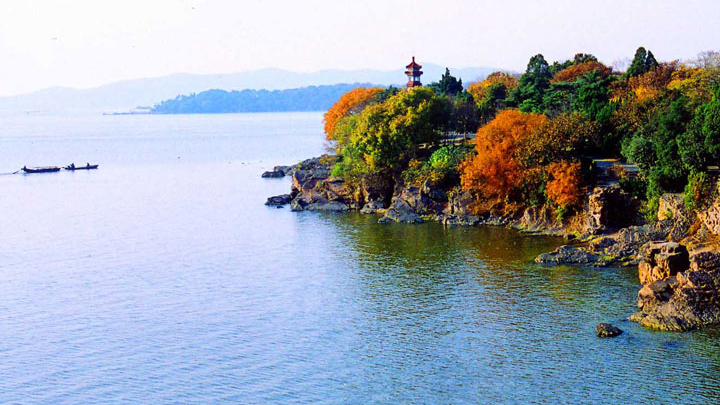
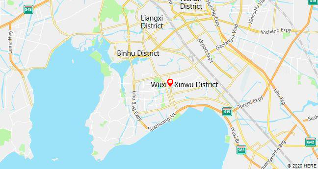

Wuxi is an industrial city on the Yangtze River between Suzhou and Nanjing. Wuxi is in the South of Jiangsu Province, roughly halfway between Shanghai and Nanjing , with Shanghai 128km to the East and Nanjing 183 km to the West.

Get to Know Wuxi
Enjoy Your Time

Exit and Entry
Transport Informations are provided
-
Wuxi Sunan Shuofang International Airport: Presently it has T1 as the International Terminal to operate flights from/to Hong Kong, Macau, Singapore and Taichung, and uses T2 as Domestic Terminal where flights for many cities in China are available.
-
Wuxi Railway Station: operates both ordinary and high speed trains. about 20 kilometers (12 miles) from Sunan Shuofang International Airport.
-
Wuxi East Railway Station: specializes in high speed trains 20 kilometers (12 miles) from Sunan Shuofang International Airport.
-
Wuxi New District Railway Station: serving as an important intermediate station. 5 kilometers (3 miles) from Sunan Shuofang International Airport.
-
Nanjing railway station - Wuxi railway station
-
Nanjing south railway station - Wuxi east railway station:
Adress:no. 1, Airport Road, Binhu District
Adress:No.1, Chenzhan Road, Liangxi District.
Adress:Xianfeng Road, Xishan District.
Adress:Intersection of Zhujiang Road and Xinhua Road, Xinwu District.
From/To Nanjing – Zhenjiang [Jiangsu]
Time Duration: 0h 55m and 1h 55 m
Ticket fair: 28.50 CNY to 79.50 CNY
Time Duratoin:0h 57m
Ticket Fair:84.50 CNY